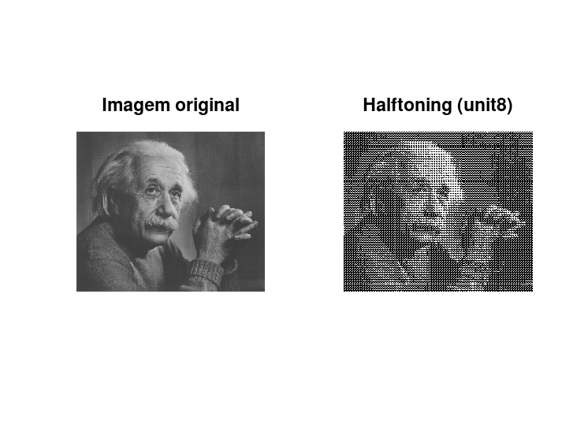
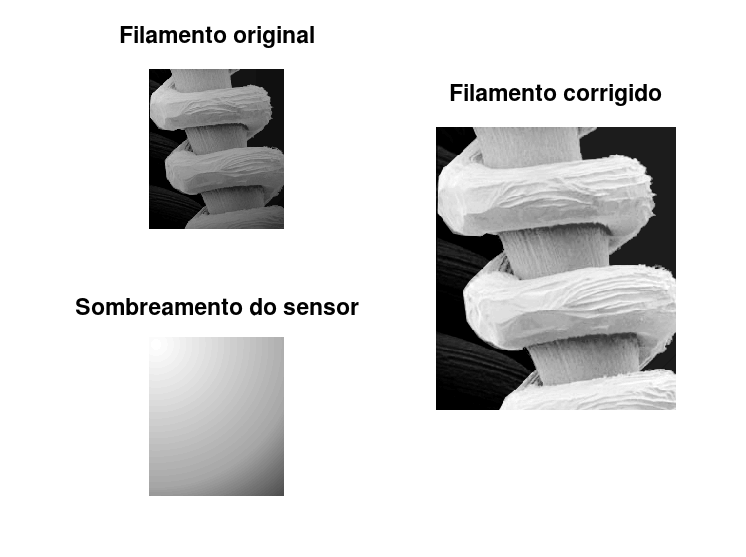
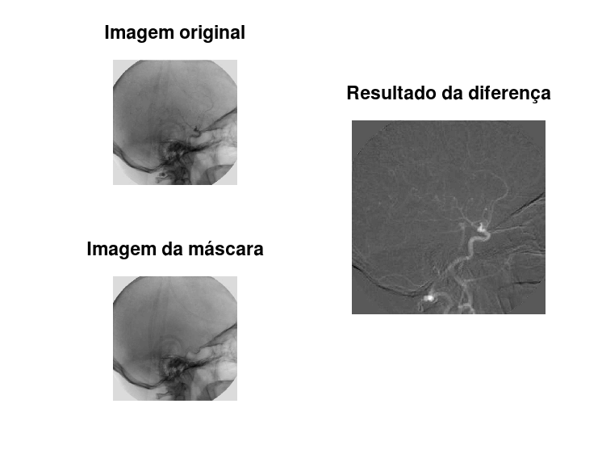
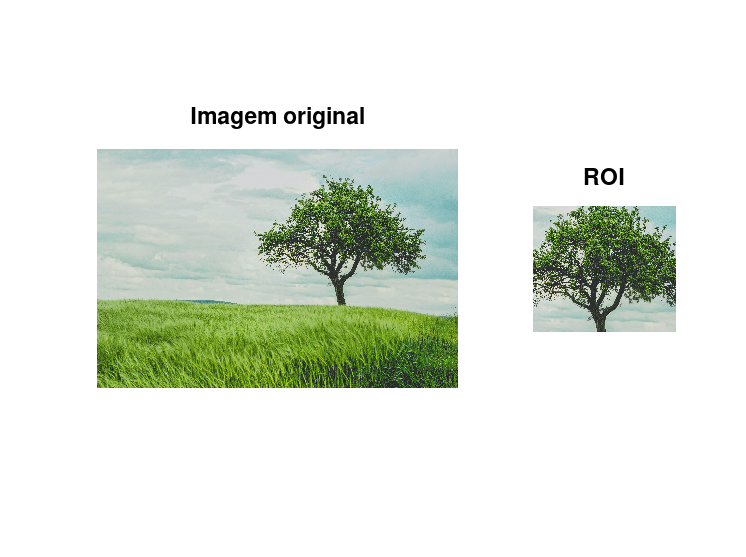

Estudante: André Alfonso Peixoto
GONZALEZ, R; WOODS, R; EDDINS, S. Digital Image Processing Using MATLAB 2. 2. ed. Gatesmark Publishing, 2009. Mathworks Stack Exchange Wikipedia
%{
(1) Definir e Formalizar
- implementar um algoritmo ‘halftoning’ utilizando a técnica de Thresholding (limiarização) fazer de forma simples.
- Aplicar a uma imagem escala de cinza.
(2) Defina a correção de sombreamento de uma imagem.
- Aplique a correção de sombreamento de uma imagem
- Imagem: tungsten_filament_shaded.tif; padrão: tungsten_sensor_shading.tif
(3) Aplique a operação diferença de duas imagens.
- Imagem: angiography_mask_image.tif; image: angiography_live_ image.tif
(4) Defina o ROI (Region of Interesse)
- Destaque uma ROI de uma imagem
%}
pkg load signal; pkg load symbolic; pkg load image;
halft{1} = [0 0 0; 0 0 0; 0 0 0];
halft{2} = [0 1 0; 0 0 0; 0 0 0];
halft{3} = [0 1 0; 0 0 0; 0 0 1];
halft{4} = [1 1 0; 0 0 0; 0 0 1];
halft{5} = [1 1 0; 0 0 0; 1 0 1];
halft{6} = [1 1 1; 0 0 0; 1 0 1];
halft{7} = [1 1 1; 0 0 1; 1 0 1];
halft{8} = [1 1 1; 0 0 1; 1 1 1];
halft{9} = [1 1 1; 1 0 1; 1 1 1];
halft{10} = [1 1 1; 1 1 1; 1 1 1];
img = imread("einstein.png");
imgbw = rgb2gray(img); % Imagem em preto e branco (BW)
[M,N] = size(imgbw);
img_halftoned = (zeros(M*3,N*3)); %Inclui todos os zeros da matriz (3 valores de cada vez)
thresh = ceil(((double(imgbw))+1)/(25.5+1));
for row = 1:M
for col = 1:N
img_halftoned(row*3-2:row*3,col*3-2:col*3) = halft{thresh(row,col)};
end
end
subplot(1,2,1);
imshow(img)
title("Imagem original");
subplot(1,2,2)
imshow(img_halftoned);
title("Halftoning (unit8)"); %Unsigned integer data type
clear;
img = im2double(imread('tungsten_filament_shaded.bmp')); sensor = im2double(imread('tungsten_sensor_shading.bmp')); target = img./sensor; % Divisão das matrizes (. permite a divisão de matrizes de tamanhos diferentes) figure subplot(2,2,1); imshow(img); title("Filamento original") subplot(2,2,3); imshow(sensor); title("Sombreamento do sensor"); subplot(2,2,[2 4]); imshow(target, []); title("Filamento corrigido");
img = im2double(imread('angiography_live_ image.bmp')); mask = im2double(imread('angiography_mask_image.bmp')); target = mask - img; % Diferença entre as duas imagens target = uint8(255*mat2gray(target)); % Escala de cinza figure subplot(2,2,1); imshow(img); title("Imagem original"); subplot(2,2,3); imshow(mask); title("Imagem da máscara"); subplot(2,2,[2 4]); imshow(target, []); title("Resultado da diferença");
tree = imread("johann-siemens-tree-unsplash.jpg"); roi = tree(500:2000, 2500:4200, 1:3); %1:3 representa a escala de cores figure subplot(2,3,[1 2 4 5]); imshow(tree); title("Imagem original"); subplot(2,3,[3 6]); imshow(roi); title("ROI");